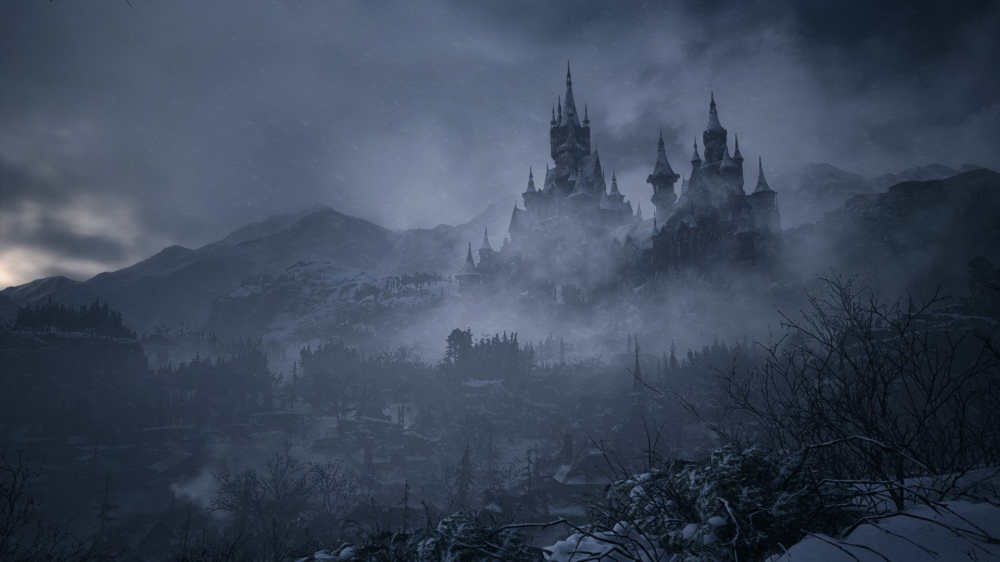
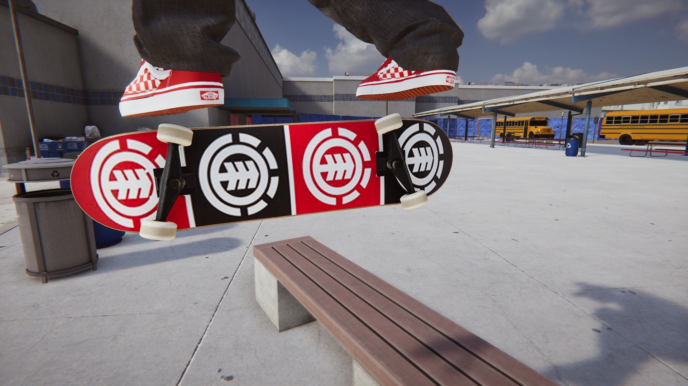
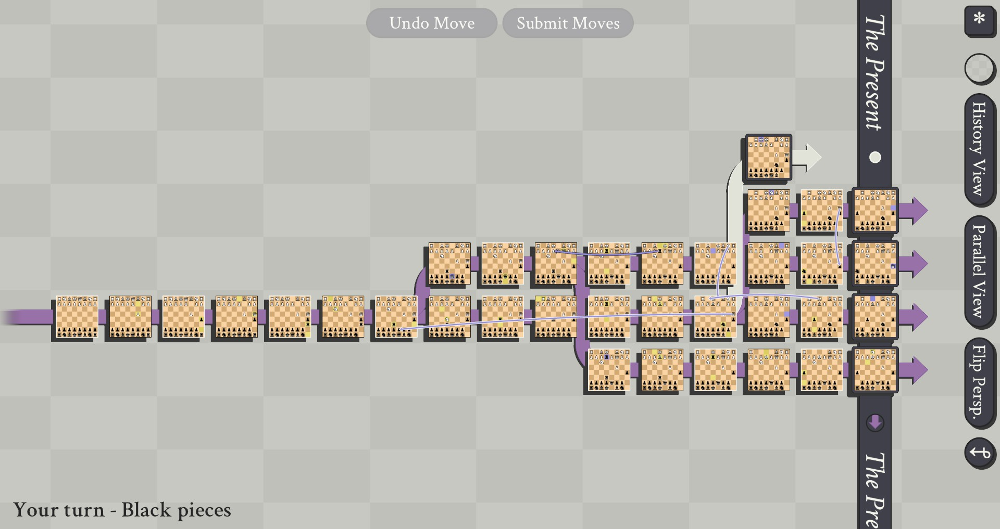

What have I been playing?
Resident Evil Village
I am a huge Resident Evil Fan. So you can imagine how excited I was that a new Resident Evil was coming out.
Safe to say this game met my expectations and knocked it out of the park, however there are some flaws I would like to discuss.
Firstly, the first 2 bosses and roughly the first hour-ish was amazing. Lady D in all her glory and the creepy doll Angie was exactly what Resident Evil is all about,
Creepy AF and true terror. The castle was stunning and I loved every second I was there. however your time there goes so quick I just wish I could've spent a bit more time there!
(DLC Perhaps??)
Donna Beneviento and her disturbing doll Angie follow Lady D and the game slows down but enhances your experience by making the horror more psychological than gory.
I personally loved this section so much as it reminded me of the classic puzzles of prior Resident Evil games and don't even get me started on the giant ass baby.
This section subverted my expectations in the best way and it's just a shame that everything afterwards feels like a step back.
I highly recommend this game to anyone who loves horror games, just make sure you have a change of pants for the baby section.
-Written by Andrew King
Skater XL
 SkaterXL is a fantastic Skate simulation game and feels like the Skate 4 we never got.
Anyone who knows me, knows that I love Skateboarding and while I can only do an Ollie and half a Shuv-It in real life, In videogames it's a different story.
I have been a skateboarding video game fan for longer than I can remember dating all the way back to the first THPS, From the first time I ever hit that Indy 900 I have been hooked by skating culture and videogames.
While THPS5 was a major disappointment and almost killed skating games (especially as EA killed the Skate Developers) a light shined in the dark tunnel of Skating Videogames,
Easy Day Studios have absolutely nailed how skate games worked and have created something truly special.
My only issue with the game is there isn't much to do as it's practically nothing but Free Skate which is great but gets repetitive fast.
They have recently started a Beta for Multiplayer and just seeing other people skate with you does make a difference when it comes to how much fun you can have in this game.
Any Skateboarding videogame fans I strongly recommend giving this a try (Did I mention they also have mod support on consoles too?)
-Written by Andrew King
5D Chess with Multiverse Time Travel
 Okay hear me out on this one!
Yeah The Witcher 3 may have beautiful graphics and Grand Theft Auto 5 may have better gameplay..
But!
When was the last time you read a game's title and had an existential crisis?
5D Chess with Multiverse Time Travel pulled me in with it's incredible title and I was left scratching my head as I couldn't wrap my mind around what I just read,
after playing the game however I believe the developers struck gold with such an amazing concept. If you make a mistake in your game of chess you can literally
travel back in time and change you move, However this will cause an alternate timeline to appear and force you to play chess across multiple dimensions of time.
When was the last time you ever heard anything as insane as that?
Do yourself a favour and just go buy the game please
-Written by Andrew King